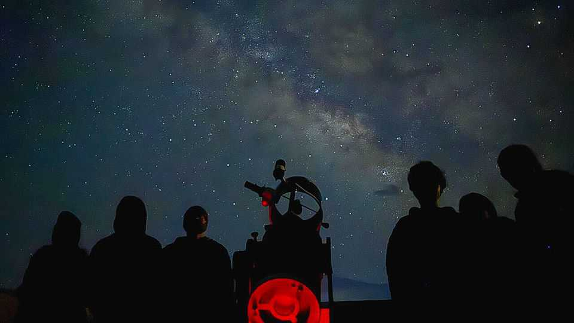

The brightest tourism trend can be found in the darkest places
Stargazing is an illuminating business
July 9th 2026

FOR MILLENNIA starry nights have guided navigators, perplexed astronomers and inspired painters. But they are becoming a rarer sight. At least 80% of the world lives under light-polluted skies—a figure that rises to 99% in America and Europe. A paper published in Science found that between 2011 and 2022 the night sky grew almost 10% brighter each year. With so many places awash with artificial light, people are increasingly seeking out the darkness.
Many became starry-eyed during the pandemic. Confined to their homes, people took to gazing at the cosmos. (It helped that lockdown contributed to a drop in light pollution in lots of places.) Some turned to social media—and online communities such as “SpaceTok”—for information. Once restrictions lifted, these hobbyists planned their trips accordingly.
The forecasts for companies offering “astrotourism” and “noctourism” are anything but cloudy. In 2024 a survey by Booking.com, a travel website, found that 62% of people were interested in destinations with limited light pollution. To meet the demand for “cosmic escapism”, some hotels now provide access to telescopes and in-house astronomers. Others are offering star-bathing and moonlit meditation.
Because the best stargazing requires seclusion, astrotourism is a boon to remote areas that do not usually lure tourists. DarkSky International, a non-profit, certifies parks and reserves with the best night-time conditions. It has seen a substantial increase in the number of applications in the past three years, growing from 16 in 2023 to 28 applications in the first half of 2026 alone.
Astro Retreat in Maan, an Indian village in the Himalayas, has seen a surge in visitors of late. Al Ula, in the Saudi Arabian desert, is going big on astrotourism by building a state-of-the-art observatory and luxury stargazing lodges. John Barentine, an astronomer in Arizona, says there is an opportunity for rural places where industries such as mining have waned.
Such trips appeal because they offer a stillness that is hard to find in much of the modern world, where “we have turned night into day in the places we live and work,” as Ruskin Hartley, DarkSky’s director, puts it. Stargazing also encourages feelings of wonderment, which are in short supply. Studies have found that those who look up report a greater sense of well-being; feelings of awe are linked to lower stress levels and a sense of tranquillity. Some credit the pastime with giving them a greater sense of perspective. As Oscar Wilde once wrote: “We are all in the gutter, but some of us are looking at the stars.” ■
For more on the latest books, films, TV shows, albums and controversies, sign up to Plot Twist, our weekly subscriber-only newsletter